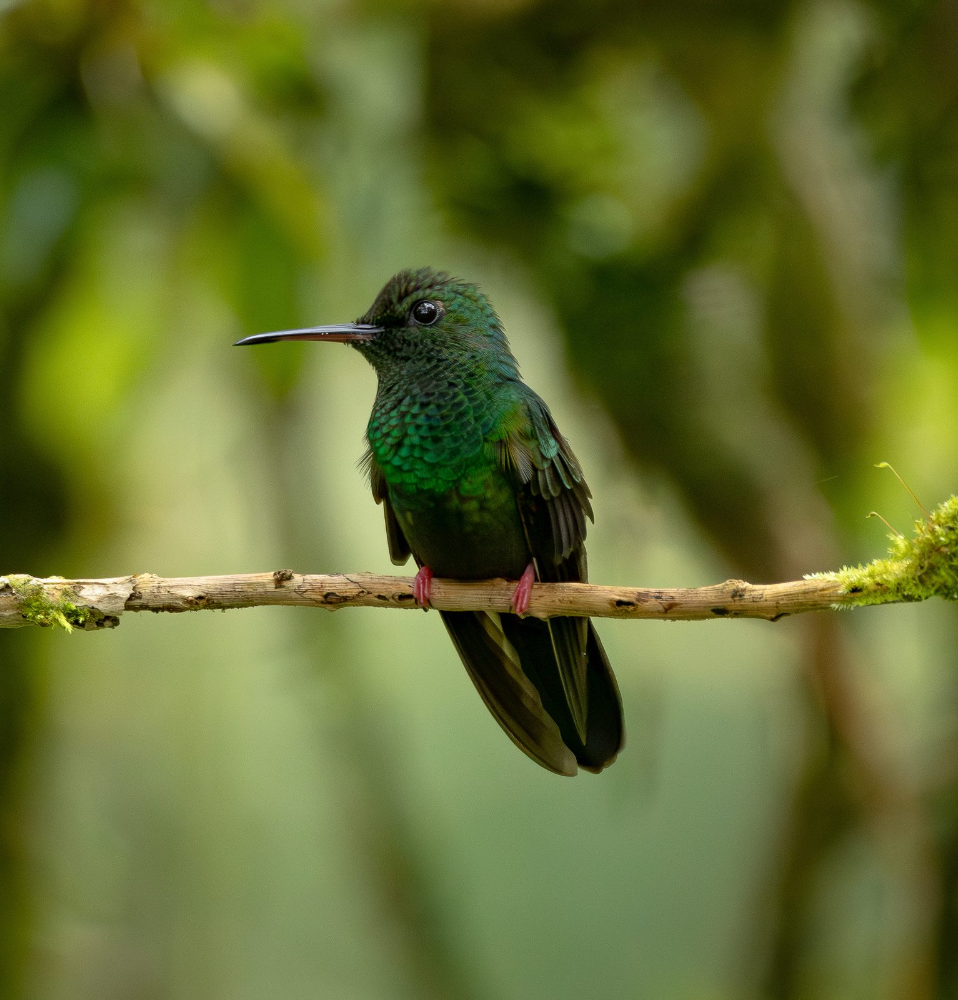

Colibrí Patirrojo
Chalybura urochrysia (Gould, 1861)
Inglés: Bronze-tailed Plumeleteer
El Colibrí Patirrojo (Chalybura urochrysia) es un colibrí de la subfamilia Trochilinae (mountain gems, bees y esmeraldas), tribu Trochilini (esmeraldas). Pesa alrededor de 6.4 g y su pico mide 26.2 mm. Vive en Costa Rica, Panamá, Colombia, Honduras, Nicaragua y Ecuador. Su estado en la Lista Roja de la UICN es Preocupación menor, con una población en disminución.
Verlo en el explorador Página en eBird ↗
De un vistazo
- Peso
- 6.4 g, más o menos 6 clips
- Pico
- 26.2 mm
- Vive en
- Bosque
- Movimientos
- Se queda en su zona todo el año
- Lista Roja
- Preocupación menor, en disminución
Su lugar en la familia
- Familia Trochilidae colibríes
- Subfamilia Trochilinae mountain gems, bees y esmeraldas
- Tribu Trochilini esmeraldas
- Género Chalybura
Dónde vive · 6 países
- Costa Rica
- Panamá
- Colombia
- Honduras
- Nicaragua
- Ecuador
Otros del género Chalybura
- Colibrí de Buffon Chalybura buffonii
Fuentes
Nombres: eBird/Clements Checklist (Cornell Lab of Ornithology), con los nombres en español de eBird México. Grupos: Dickinson y Remsen (2013) y McGuire et al. (2014); los nombres de los grupos siguen los de eBird en español cuando existen y, si no, se dejan en inglés. Peso, pico, hábitat y movimientos: AVONET (Tobias et al. 2022, CC BY 4.0). Países: BirdLife International DataZone, comparado con registros de eBird a través de GBIF. Estado y tendencia en la Lista Roja: BirdLife International, la autoridad de la Lista Roja de la UICN para las aves.